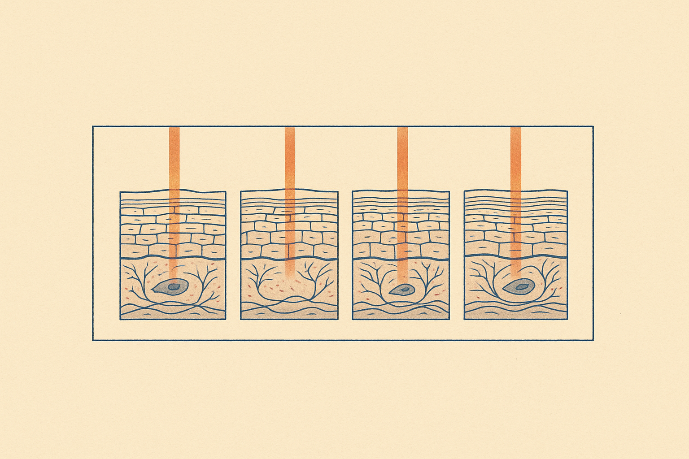
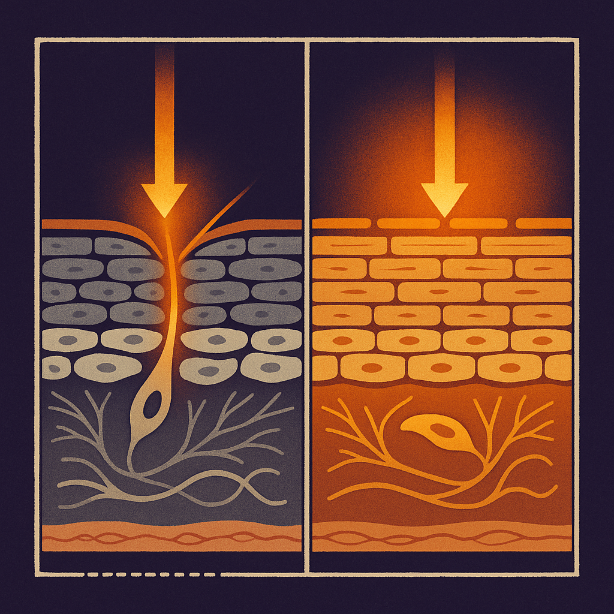
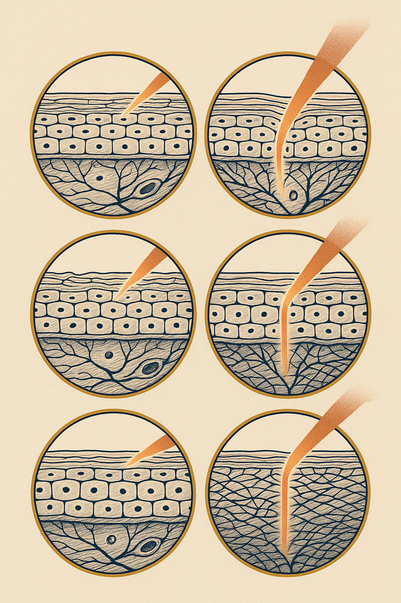

Review below. Reply approve to publish the Facebook post, or tell me edits.

Everyone has one. A serum, a cream, a whole routine that a friend swears rebuilt her skin. She looked genuinely different, so you bought it, used it religiously for two months, and felt precisely nothing.
The usual conclusion is one of two things: you did it wrong, or she is exaggerating. Usually neither is true. You were running the same experiment on two different systems, and nobody told you.
If you only keep one thing from this article, keep this. It is the whole protocol, and it works on a sample size of one.
The rest of this piece is why each of those steps matters.
We talk about "skin" as if it were one standard material, like cotton or glass. It is not. It is a living barrier, and the differences between two adult faces are bigger than most people assume.
Sebum output varies several-fold between adults. One person's face produces a steady film of oil that buffers everything applied to it; another's produces a fraction of that, so the same product lands on a much drier, more permeable surface. The barrier lipids themselves, the mix of ceramides, cholesterol and fatty acids that hold the outer layer together, differ in composition from person to person. The stratum corneum, that outermost layer, differs in thickness by site and by individual. Cell turnover slows with age, so a 55-year-old face renews itself on a meaningfully longer clock than a 30-year-old one.
Then layer on exposure. Sun, wind, ducted heating all winter, outdoor sport, screens until midnight, six hours of sleep versus eight. Two faces of the same age in the same city can be carrying completely different histories.
A product does not act on "skin". It acts on a specific barrier with a specific starting state. Change the barrier and you change the result, even when the bottle is identical.
This is the single most underrated variable in every skincare conversation, and it explains most of the mystery.
Someone with a compromised, dehydrated barrier gets a visible jump from almost any decent moisturiser. Not because the moisturiser is magic, but because there was a deficit to fill. Water content rises, the surface plumps, light bounces differently, and within a week she looks transformed. Her report is completely honest.
Someone whose barrier is already in good shape puts the same product on and gets a small, slow change. Also completely honest. There was no deficit, so there was nothing dramatic to correct.
Same product. Two truthful reports. Opposite verdicts.
Improvement is always measured from where you started, not from a brochure. The bigger the gap between your skin's current state and its well-supported state, the bigger the visible change any competent product can produce. If your skin is already close to its ceiling, "nothing happened" may actually mean "there was little left to fix", which is not a failure at all.
Here is the quieter problem. Real routines change in clusters.
Your friend did not just start the serum. She started the serum in October, as the heating went off and the humidity came back. She also started sleeping properly after a stressful stretch, drank less for a fortnight, and swapped her cleanser because the old one ran out. Four inputs moved at once, and the serum got the credit.
This is not deception. It is just how attribution works when several things change together: guesswork. Which is exactly why her anecdote can be both true for her and useless as a prediction for you. She is reporting a real outcome from a bundle of changes you will never replicate.
The honest answer has two clocks, which is why so many verdicts land wrong.
Surface qualities, hydration, glow, evenness of tone, can read in 7 to 10 days. Structural qualities like fine lines run on the skin's renewal clock and need 4 to 8 weeks before a verdict means anything. Deciding on day 4 is not a test, it is a mood.
Photograph, because memory is a poor instrument. Your memory of your own face from three weeks ago is genuinely unreliable; a photo is not. And write one line a week alongside it. "Week 3: cheeks less tight, no change around eyes." That is enough. At the end you will have a record instead of an impression.
Then decide at the end of the window, and accept "no change" as a legitimate, useful result. It tells you where your money should not go, which is worth knowing.
One more distinction worth keeping: judge the category on evidence, judge the individual product on your own record. Retinoids as a category, light therapy as a category, moisturisers as a category all have their own bodies of evidence, and red light is one of those gradual, cumulative things you judge over a proper 4 to 8 week window rather than on a first impression. It is a cosmetic approach, not medicine. Whether a specific product earns a place on your shelf is answered by your own weeks of photos, not by anyone's before-and-after.
So the right question was never "does this work". It is "does this work for my skin, from my starting point, over a fair window". That is not a question a friend can answer for you, however honest she is. It is a test you can run yourself, and it costs nothing but patience.
How long should I give it before I decide? Seven to ten days tells you about glow, hydration and tone. Anything structural needs 4 to 8 weeks of consistent use and a weekly photo before the verdict is worth anything.
Tell me the one everybody swore by that did nothing for you. I want to know if there is a pattern.
If you ever want a closer look at ours, it is here: the Redermis light therapy mask

You are not doing it wrong. That product everyone swears by genuinely did nothing for you, and there is a boring reason why.
Two faces are not two copies of the same system. Sebum output, barrier lipids, how thick the surface layer is, how fast it turns over, how much sun and wind it actually cops. All different.
The biggest hidden variable is where you started. A depleted barrier improves visibly from almost any decent moisturiser, because there was a deficit to fill. A barrier already in good shape barely shifts from the same jar. Two honest reviews, opposite verdicts.
And almost nobody tests one thing at a time. New product, new season, better sleep. Four inputs moved, one got the credit.
If you want a real answer, run it properly:
1. Change one thing.
2. Hold everything else steady, including the boring parts.
3. Give it 7 to 10 days for surface changes, 4 to 8 weeks for anything structural.
4. Same light, same spot, one photo a week.
So: what was yours? The product everybody promised would change your skin, that did nothing. And did anything ever surprise you the other way? Genuinely curious whether there is a pattern in the answers.
If you ever want a closer look at ours, it is here: https://redermis.com.au/products/red-light-therapy-face-neck-mask
#skinscience #skincareroutine #skinbarrier
IMAGE PROMPT: Editorial science illustration in the style of New Scientist, single square frame on deep plum-indigo, divided by one thin ivory rule into exactly two equal panels, both fully inside the frame. Each panel holds the SAME skin cross-section drawn as flat medical-textbook histology: flattened corneocyte bricks bound by fine parallel lipid-lamellae mortar, a living epidermis of nucleated cells, a clear basement membrane, and a dermis of woven collagen and elastin with one spindle fibroblast and one looping capillary. Only the starting state differs. LEFT: a depleted barrier, mortar thinned and gapped, collagen sparse and loose, tissue cool slate and dull, and one warm amber input enters and produces a large obvious change, mortar resealing and the section warming to bright amber. RIGHT: the identical barrier already intact, mortar smooth and sealed, collagen dense and warm, and the identical input produces only a barely perceptible brightening. A thin dotted baseline under each panel sits at a different height. Ivory linework, terracotta and warm amber accents, hard contrast so the two panels read differently at 150 pixels. NO text, NO numbers, NO labels, NO product, NO mask, NO device, NO people, NO faces, NO logos.

It worked for her. It did nothing for you. Both are true.
Two faces are not two copies of the same system.
Sebum output differs. Barrier lipids differ. Surface thickness differs. Turnover speed differs.
And the quiet one nobody accounts for: your starting point. A depleted barrier jumps from almost any decent moisturiser, because there was a gap to fill. A healthy one moves slowly. Same product. Two honest verdicts.
Most of us never test one thing anyway. New serum, new season, better sleep, all at once. One of them takes the credit.
If you want a real answer: change one thing. Hold everything else steady. Give it 7 to 10 days for glow, 4 to 8 weeks for anything structural. Same light, same spot, same time of day, no filter.
And remember: "no change" is a result too. It just means that variable was not your bottleneck.
Drop it in the comments: the product everyone swore by that did nothing for you. Then tell me the one that quietly surprised you.
If you want a closer look at ours, link in bio.
#skinbarrier #skincarescience #skincareroutine #redlighttherapy #ledfacemask #skinlongevity
IMAGE PROMPT: Elegant vertical editorial science illustration in the style of Scientific American and Quanta, 4:5 crop, warm bone-cream paper ground with ink-navy linework. Four circular specimen roundels of identical size in a perfect symmetric 2x2 grid with generous even margins, every circle fully inside the frame and nothing cropped, each ringed by a thin gold rule. Each roundel holds the SAME skin cross-section as flat medical-textbook histology: flattened corneocyte bricks in fine parallel lipid-lamellae mortar, a living epidermis of nucleated cells with one nucleus each, a distinct basement membrane, and a dermis of woven collagen and elastin with one spindle fibroblast and one looping capillary. The four differ only in barrier state and collagen density: sparse and gapped, moderately sparse, moderately dense, densely woven. One identical narrow warm amber-red beam enters each roundel from the upper right at the same angle and visibly behaves differently inside each: spreading wide and shallow in the sparse specimen, travelling narrow and deep to bloom in the collagen of the dense specimen, with two intermediate behaviours. Terracotta, rose-gold and warm amber for the light, restrained premium palette, bold shapes legible at 150 pixels. NO cropped or half circles, NO invented glands or globule clusters, NO text, NO letters, NO numbers, NO labels, NO product, NO mask, NO device, NO people, NO faces, NO hands, NO logos.
**Title:** Why Your Friend's Holy Grail Did Nothing for Your Skin
**Description:** Your skin is running a different experiment to everyone else's. Baseline, barrier, genetics and routine all shift the result, which is why one person's holy grail can be another's shrug. New serum, retinol or a light-based device, the test is the same: change one thing, keep everything else steady, and give it 4 to 8 weeks with a same-light, same-angle photo at the start and end. One variable, one timeline, your own before photo as the control. Save this before you buy the next thing.
**Hashtags:** #SkincareTips #RedLightTherapy #LEDFaceMask #SkincareRoutine #SkinScience
Note: this pin reuses the Instagram image.